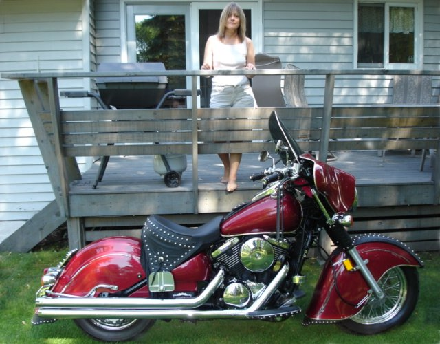

On these pages, I will have some of my favorite things, from over the years.
On these pages, I will have some of my favorite things, from over the years.

Hi, I'm Chuck...I am Prior to my accident
I was a HVAC technician in southern Minnesota. I was divorced in 1987, and moved to Mpls, Mn.
In November of 1990 I was hit head-on by a drunk driver... driving on the wrong side of the
freeway. I was very fortunate as I only suffered injuries to my right ankle and foot. The injuries
were serious enough to prevent me from returning to work even after numerous surgeries.
Since I am originally from Northern Minnesota, I returned here to settle in........
. Today I get along quite well,
and don't suffer too many noticeable discomforts... most of the time. I have been happily remarried since
1996 to a great lady. I am able to do some hobbies, and most of the things that are required to maintain
our home. I usually rebuild one or two tractors a year, keep the yard looking great, and sneak in some
fishing. I also now have Congestive heart failure, and as of late.. SVT, but do ok as long as I remember to take
my meds. I am currently doing quite well. 65 78 years old,and retired, due to an automobile accident
a few years ago . I enjoy life, and have kept busy by restoring early
John Deere lawn tractors, wrecked motorcycles, a few old pickups, doing yard work, and computer stuff.  Things were going quite well
until one night in January 1995, when I was stranded and spent 12 hours in my truck with no heat
and the temperature reached 43 degrees below zero (Farenheit). That time I suffered severe frostbite
to my already damaged right foot,and had to have all the toes removed.
Things were going quite well
until one night in January 1995, when I was stranded and spent 12 hours in my truck with no heat
and the temperature reached 43 degrees below zero (Farenheit). That time I suffered severe frostbite
to my already damaged right foot,and had to have all the toes removed.
(Up date) I am now 78, we have sold our home and moved into a senior apartment building,
so my activities are somewhat limited now. I am still adjusting...
I am going to start updating these pages, since it has been quite some time since I have!
CHUCK